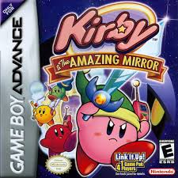
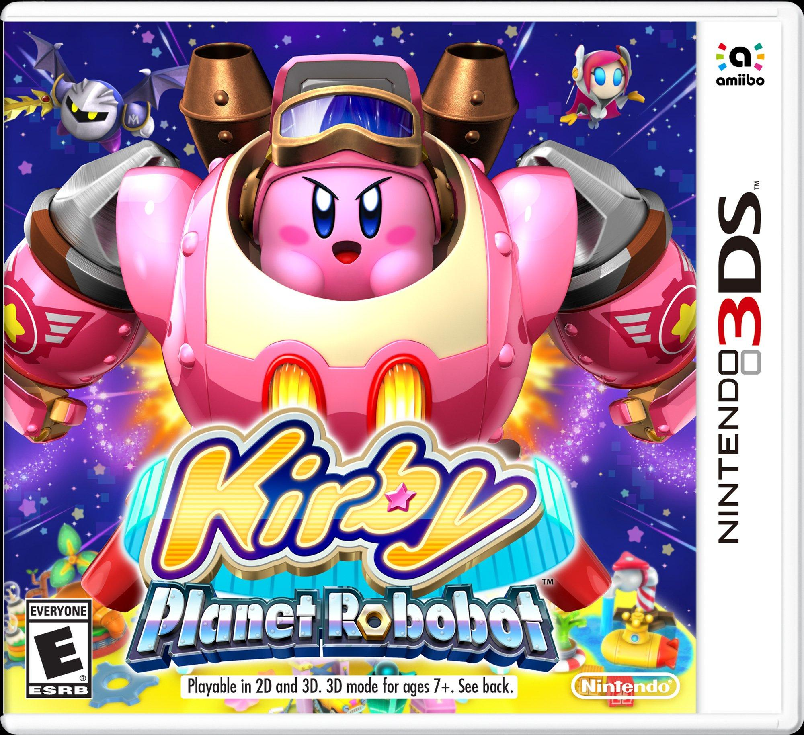
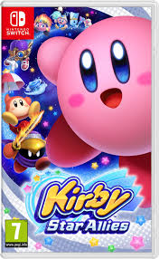

Game Series
Kirby has been featured in numerous games across multiple Nintendo platforms. Here are some of the most notable titles:
🎮 Kirby Game Series Timeline
Explore the evolution of Kirby through some of its most iconic games!
1992 - Kirby's Dream Land
The first Kirby game, released for the Game Boy, introduced the adorable pink puffball to the world!
1993 - Kirby's Adventure
This game introduced the Copy Ability, allowing Kirby to steal enemy powers!
1996 - Kirby Super Star
Known for its "8 games in one" concept, this SNES classic expanded Kirby’s gameplay and included co-op!
2004 - Kirby & The Amazing Mirror
A unique Metroidvania-style Kirby game where players explore a large, interconnected world!
2010 - Kirby's Epic Yarn
A beautifully artistic game where Kirby is transformed into yarn, featuring a unique no-death mechanic!
2016 - Kirby: Planet Robobot
Kirby gets a robotic upgrade with the new "Robobot Armor" to battle mechanical enemies!
2018 - Kirby Star Allies
A cooperative multiplayer adventure where Kirby can recruit enemies as allies!
2022 - Kirby and the Forgotten Land
The first fully 3D Kirby platformer, set in a mysterious abandoned world filled with secrets!